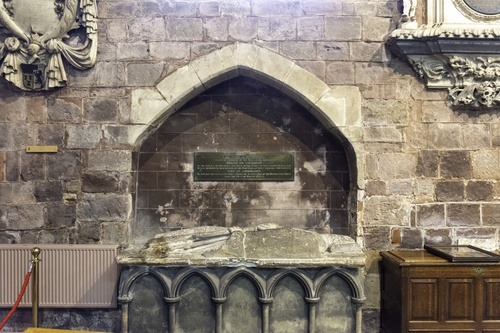
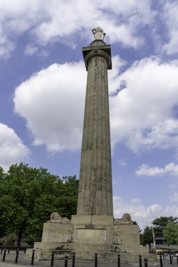

Roger de Montgomery

Roger de Montgomery was appointed Earl of Shrewsbury in 1071 (the first to receive this title), although some historians believe he was not actually created Earl until 1074. De Montgomery did not fight in the initial invasion of England in 1066, but was one of William the Conqueror’s principal counsellors.
He was one of the most powerful Marcher lords, as he been granted seven-eighths of the whole county of Shropshire. De Montgomery was also a great patron of monasticism, he became a monk in his newly founded Abbey of Shrewsbury just before he died in 1094.
After William I's death in 1087, Roger joined with other rebels to overthrow the newly crowned king, William II, in the Rebellion of 1088. However, William was able to convince Roger to abandon the rebellion and to side with him. This worked out favourably for Roger, as the rebels were beaten and lost their land holdings in England.
The title Earl of Shrewsbury was forfeit in 1102 after the 3rd Earl, rebelled against Henry I and joined Robert Curthose's invasion of England in 1101.
Rowland Hill

General Rowland Hill (11th August 1772 to 10th December 1842, born in Prees), 1st Viscount Hill, served in the Napoleonic Wars as a trusted commander under the command of the Duke of Wellington, he became Commander-in-Chief of the British Army in 1828. Hill was also Member of Parliament for Shrewsbury from 1812 to 1814 when he was raised to his peerage.
The column is the tallest Doric column in England at 133ft 6in, it commemorates Hill with a 17ft statue - the column was built between 1814 an 1816. Following his death in 1842, Hill bequeathed monies to the person in charge of the column.